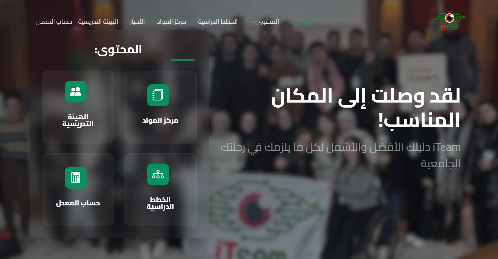

ITEAM E-Learning Platform
ITEAM is a student club at the University of Jordan, founded by IT students for IT students. I developed the club’s e-learning platform, providing students with educational resources, courses, and events through an easy-to-use web interface.